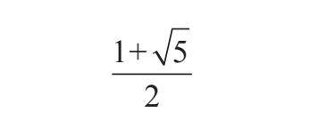

下面的内容为帕乔利对神圣比例的描述，摘自《神圣比例》的连续两章。第七章介绍了黄金比例的识别方法，第八章介绍了黄金比例的计算方法。
译文采用了原文的风格，现代读者阅读起来有一定困难。按照今天的标准来说，文中的主要问题是论述不切题。就连今天小学教授的基本知识在帕乔利的书中都得费力地解释，比如分数等式，而且他还频繁地使用了比例的概念。大约在公元1500年，也就是帕乔利所处的那个时代，数学符号的发展依旧落后，而且人们对公式也没有明确的概念。我们可以从文本中看出作者在表达下面这个分数时遇到了很大的困难，

他只能用文字对其进行描述而不能用符号来表示。
然而阅读这段内容还是值得的，因为它对于黄金比例来说有着重要的历史价值，而且它告诉了我们数学在过去的样子。从这个角度来看，再考虑到那时人们使用的数学语言并不成熟，有很大的局限性，那么我们就会发现意大利杰出思想家帕乔利的作品以及他同时代人的作品，尤其是他的前辈所取得的成就就显得尤为可贵。
第七章
神圣比例分割线段的首要性质
圣贤所说的中外比即神圣比例，因为按中外比分一条线段，如果我们在较长部分增加原来按照中外比分割的线段的一半，那么结果必然是，最初线段总长的平方与新增线段的平方之和为新增线段的平方的五倍。
在继续进行下面的内容之前，我们必须说明如何理解并引入数字之比，以及圣贤是如何在他们的著作中提到神圣比例。然后，我会解释圣贤所说的“中外比”（propritio habens et duo extrema），即含有一个中项和两个外项的比例，这样的三项为一组，因为无论怎样，每一组必定有一个中项和两个外项，因为如果不知道两个外项，那么永远无法求出中项。
如何得到中项和外项
我们已经知道了如何定义神圣比例，但仍需要说明如何计算任意中项和外项，以及在计算过程中运用神圣比例需要满足的条件。为此我们需要知道，在同一组的三项中必然存在两个必要的特征或比，即第一项和第二项之间的比，第二项和第三项之间的比。举例来说，假设有同一组的三项并且没有其他方法得知它们之间存在的比例关系。设第一项为a，a等于9，第二项为b，b等于6，第三项为c，c等于4。
那么这三项之间存在两个比，一个是a与b之比，即9与6之比，我们在本书中将其称为“三比二”（sesquialtera），即较大项是较小项的一倍半，因为9既包括6也包括6的一半3，因此才将其称作“三比二”。第二项b与第三项c之比，即6与4之比，约分后也为“三比二”。现在，我们不需要关注这两个比是否相同，因为我们的目的是要说明同一组的三项之间一定存在两个比。同样，神圣比例也需要相同的条件，也就是说，在神圣比例的三项中，总是包含一个中项和两个外项，神圣比例总是由两个相同的比组成。而且不管其余的比例是否为连比，两个相同的比都能组成无数个比例，因为有时这三项的比例扩大了一倍，有时扩大了两倍，对于其他所有常见的比例来说也是如此。但是正如我们所见，对于神圣比例来说不能有任何变化。
因此，要判断各项是否符合神圣比例，我们必须确定这三项的比一定是连比，解释如下：较小的外项乘以它与中项之和等于中项的平方，因此，较小外项与中项的和必然等于较大的外项。当我们找到这样任意一组的三项时，就可以说它们符合中外比。其中较大的外项总是等于较小的外项与中项相加。我们可以说较大的外项分成了两部分，即三项中较小的外项与中项。我们必须注意到神圣比例不可能是有理数，因为考虑到中项的存在，如果较大的外项是有理数，较小的外项根本不可能指定为任意数字，因此两个外项总是无理数，我们会在下面做出详细解释。
第八章
如何根据中外比分解数字
我们经过仔细思考后一定知道，按照中外比分解数字是指：一个数分解后得到的两个数字不相等，这样在它们的比例中，较小数与原数的乘积等于较大数的平方。但是，根据中外比把一个数分解为两个数，在它们的比例中，一个数与原数的乘积等于另一个数的平方，这种说法使人厌烦，而我们希望将其替换为任何人都容易懂的方法，并且任何一个数学家都可以将这个命题，即“分解后的一个数与原数的乘积等于另一个数的平方”简化，将其简化为神圣比例，因为没有其他方法能够将其解释清楚。因此，如果告诉某人“把10分成两个数，这样较小的一个数乘以10等于另一个数乘以它自己”，对于这个例子以及其他类似的例子来说，在我们称为代数学的推算过程中，根据其中的特点，以及我们在本书中就此给出的计算法则，他就能够凭以上条件求解，即分解后较小的数是15减去125的平方根，较大的数是125的平方根减去5。这样得到的两数为无理数，用专业术语来讲残差（residuals）为6。通俗地说，这两个数可以解释为：较小的数等于15减去125的平方根。这意味着125的平方根仅大于11，用15减去它后，我们得到的数在3和4之间。而较大的数可以表述为125的平方根减去5。这意味着我们对125开平方，结果只略大于11，用它减去5，便得到了比6大比7小的一个数。但是，我们在研究中以各种方法充分论证了残差、二项式和平方根以及其他所有有理数和无理数、整数和分数的加减乘除运算，我不想在本书中重复这些内容，因为我们只想说些新的东西，而不是那些已经讲过的东西。
因此，分解每一个数始终都会得到三个成连比的项，根据这一点，被分解的数便是较大的外项，在这个例子中是10；另一个是第二大的数，也就是中项，即125的平方根减5；第三个数是较小的外项，即15减去125的平方根。在这三项之间存在相同的比，即第一项比第二项等于第二项比第三项。反过来，第三项比第二项也等于第二项比第一项。如果我们用较小的项，也就是15减去125的平方根所得的差乘以较大项10，同样等于中项乘以它自己，即125的平方根减去5，然后平方，因为根据神圣比例，每个乘积都等于150减去12 500的平方根。所以说10是根据神圣比例来分解的，其中较大的部分是125的平方根减5，较小的部分是15减去125的平方根，二者都是无理数。以上就是涉及神圣比例分解数字的全部内容。